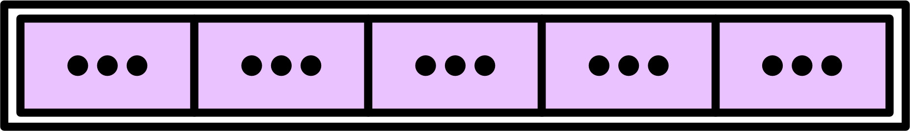
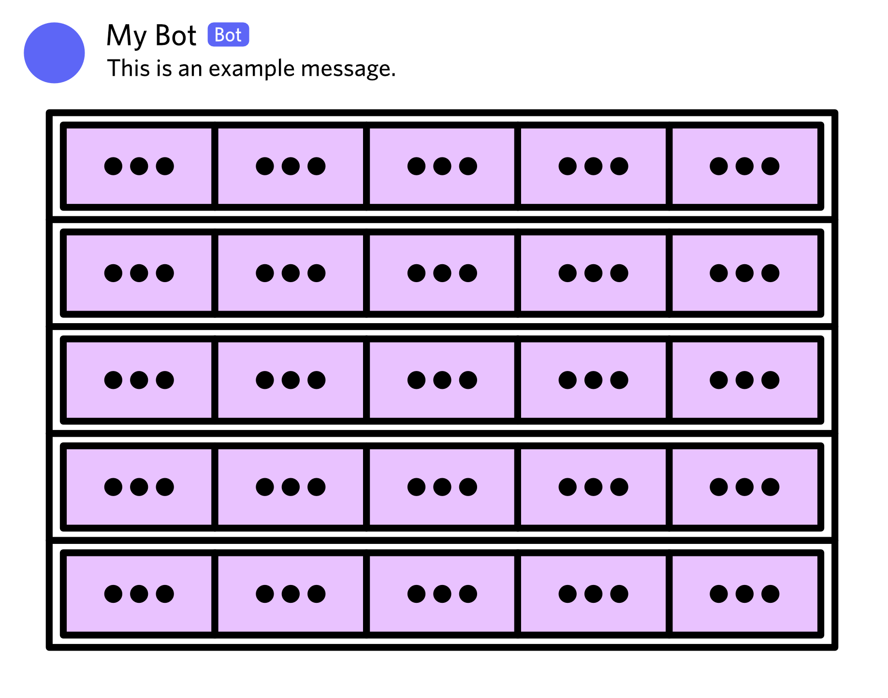
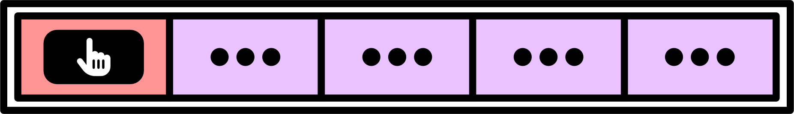
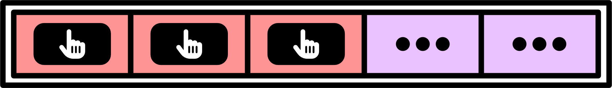
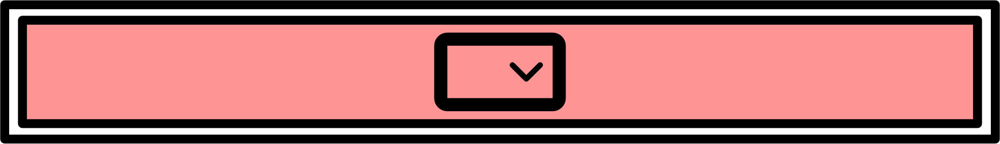
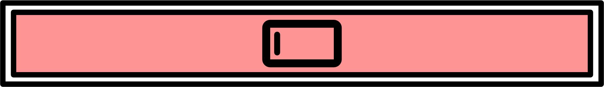

Components
Discord provides several Message Components, allowing for more advanced forms of user interactions. Kord Extensions exposes these via its components system.
Understanding Components
As Discord states, components are a framework for adding interactive elements to the messages your app or bot sends. Several types of components exist, and they're only available in specific contexts:
Type | Units | Description | ||
|---|---|---|---|---|
Action Row | Five | Container for other components, up to five rows per message or Modal. Each row has a width of five units. | ✅ Yes | ✅ Yes |
Button | One | Clickable button. | ✅ Yes | ❌ No |
Select Menu | Five | Dropdown menu for selecting zero, one, or multiple items. Supports multiple data types: channels, mentionables, roles, strings, and users. | ✅ Yes | ❌ No |
Text Input | Five | Field that a user may use to input one or multiple lines of text. | ❌ No | ✅ Yes |
Action Rows
Action rows act as a container for other components, and they must be used anywhere you wish to use a component. You may only have up to five rows of components in any single context.

Each component has a width measured in "units." Action rows are five units wide, and thus may contain components up to a total width of five units. If an action row contains multiple components, there shouldn’t be any gaps between them.

Buttons
Buttons are clickable/tappable components, which the user may interact with to trigger an action or open a link. They’re the only component type with a width of one unit, and thus they’re the only type of component that can appear multiple times in a single row.
You may only add Buttons to messages. You can't add them to Modals.


Several types of buttons exist:
Action Buttons: Buttons which trigger an event when interacted with, which your bot may react to.
Disabled Buttons: Buttons which don't do anything when interacted with.
Link Buttons: Buttons which open a predefined URL in the user's browser when interacted with.
Select Menus
Select Menus represent dropdown menus, allowing users to select zero, one, or multiple options from a set of 25. Select Menus have a width of five units, meaning they take up an entire row.
You may only add Select Menus to messages. You can't add them to Modals.

Select menus support several types of data:
Channels
Mentionables (channels, roles and users)
Roles
Strings
Users
Text Inputs
Text Inputs represent editable text fields, allowing users to input arbitrary data. Text Inputs have a width of five units, meaning they take up an entire row.
You may only add Text Inputs to Modals. You can't add them to messages.

Text Inputs support two different form factors:
Line: for a single line of text.
Paragraph: for a larger, multi-line block of text.